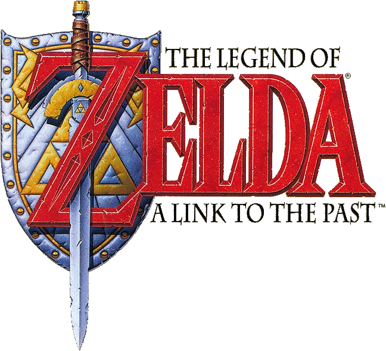

Logotipo de The Legend of Zelda: A Link to the Past, um classico jogo de acao e aventura da Nintendo. O escudo, a espada e o simbolo da Triforce representam os principais elementos da serie, como coragem, heroismo e a jornada do protagonista Link.